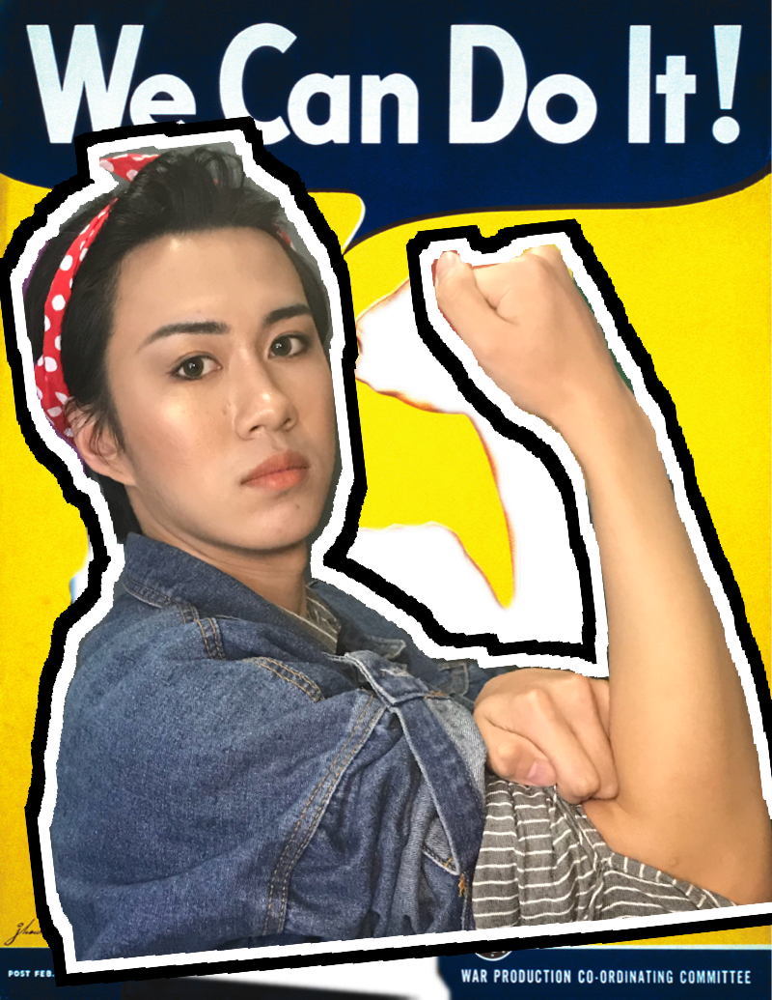
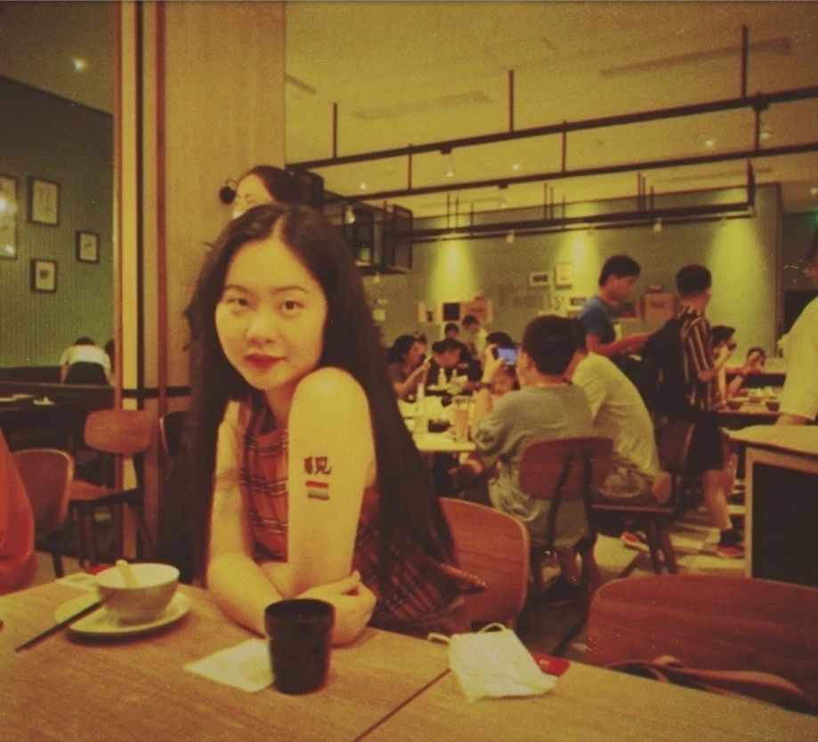

在这几个月的舆论场上，由英国作家J. K. 罗琳引发的跨性别争论正在持续上演。以罗琳为代表的Gender Critical Feminist（“对性别持批判态度的女权主义者”，又称Trans Exclusive Radical Feminist，“排除跨性别的激进女权主义者”）和由跨性别运动家和友跨女权主义者组成的挺跨阵营展开了激烈辩论。这一讨论也蔓延到了中文互联网上，尽管与英国相比，中国的跨性别运动仍处于初生状态，中国在跨性别权益保护的法律法规上也无明显建树（因而也鲜有可供争议的实质性政策），但罗琳在中国公众中的高知名度仍然动员起了各方阵营的密集交锋。在罗琳等人的观点中，跨性别运动对“生理性别”（sex）的否定颠覆了女性独特的身体经验，而跨性别女性对女性空间的“侵入”，为性骚扰和性侵害的发生打开了可乘之机，同时也让一些“假扮成女性的男性”篡夺了女权运动的成果。此外，英国近年来跨性别男性人数的激增，则折射出社会日益加重的厌女情结，本质上是让女童以“跨为男性”的方式逃避性别制度对女性的惩罚。在ta们眼中，为跨性别提供医疗服务实际上助长了性别压迫，改变性别刻板印象才是让有性别焦虑的人免于压迫的根本途径，而手术和激素则是一种“饮鸩止渴”式的手段。而在挺跨阵营的观点中，将跨性别女性纳入女性的范畴，并不是对性别刻板印象的固化或是对女性团结的威胁，而是对“女性”这一概念本身的拓展。此外，TERF的论证往往有着这样的漏洞，如用对性骚扰施害者的道德恐慌对跨性别女性进行替罪羊，以小部分跨性别人士的行为来否定全体跨性别应享的权利，否认顺性别相对于跨性别所享受的特权等。尽管这两方阵营都产出了大量论述和观点，但在互联网空间的讨论中，观点交锋时常不仅没有促进双方的互相理解，而是加剧了对垒的两极化。因此，瓜瓜想邀请对这个话题感兴趣的朋友，从网络的虚拟躯体下载到杭州同志中心的实体空间中，以面对面的方式进行对话和沟通。不管你是跨性别运动的支持者，是支持或同情罗琳观点的人，还是没有明显立场、想要获得更多信息和讨论机会的朋友，这个空间都向你开放。“生理性别”/被指派性别与性别认同之间存在冲突吗？存在纯粹的“生理性别”吗？跨性别如何为女权主义贡献出独特的观点和反思性别的机会？在女权主义流派日渐多元化的今天，当你的“女权主义盟友”和你在某些议题上的观点出现巨大分歧时，你能如何理解和行动？如果你有其它问题想要加入到这场讨论，也可以在留言告诉我们~
本次茶话会为开放式讨论，请勿预设立场，请大家做到平等讨论，禁止歧视、攻击ta人。
活动时间
7月19日 周日 14:30
活动地点
杭州同志中心（公众号后台回复“幸福在哪里”）
活动收费
本活动默认免费，但需要参加的朋友们携带零食饮料来一起分享；不携带的朋友也可以现场支付茶资15元给大家买水果哦。
主持人
小丸嘤
热爱化妆和发母的跨性别女权主义者

青雀
女权主义者，酷儿，治疗师，关注多元性别、残障、儿童教育等议题

参与方式
请点击阅读原文链接报名参加
温馨提示
1. 鉴于政府疫情管控和机构人力资源紧张，本活动存在因不可抗力而取消的可能性。如遇活动临时取消，我们会提前通过本公众号通知，敬请谅解。
2. 请参与活动的小伙伴自行评估健康情况，做好自我防护，并出示杭州健康码。
3. 杭州同志中心所在楼宇增设访客登记系统，请参与活动的小伙伴携带有效证件（中国居民身份证等）进入楼宇。
感谢各位小伙伴对瓜瓜茶话会和酷儿论坛的支持
齐心抗疫，瓜瓜和你在一起